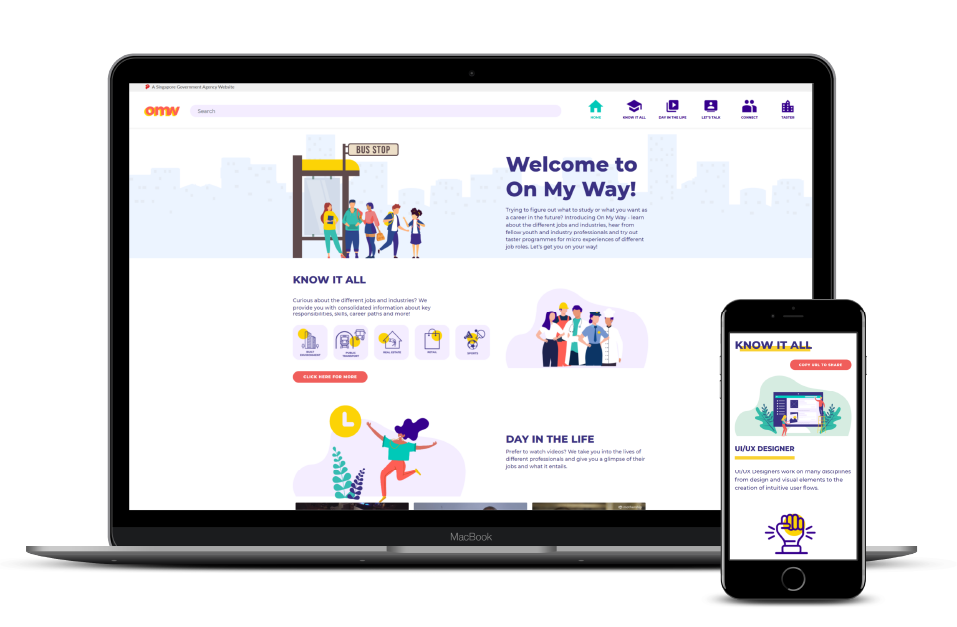
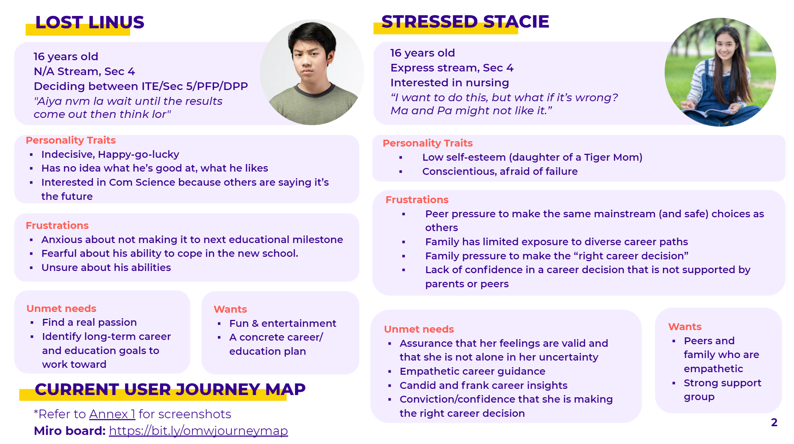
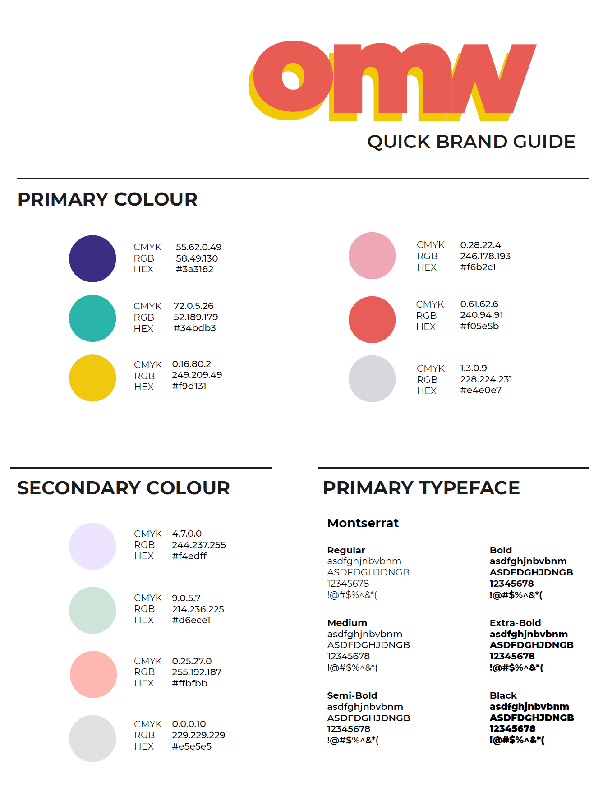
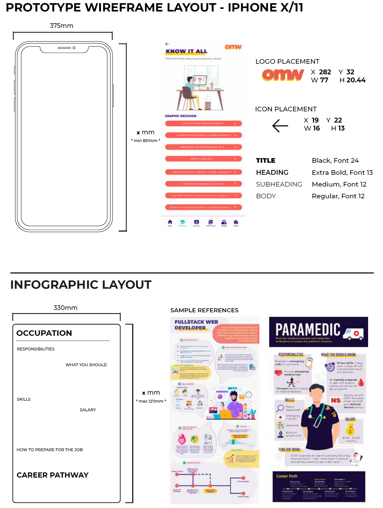

OnMyWay: A youth career exploration platform
I redesigned a youth-focused digital platform to help students explore careers through stories, interests, and real-life journeys. The goal was to turn career discovery—often confusing and abstract—into something intuitive, relatable, and inspiring.
Highlights & outcomes

The challenge
Career exploration often feels overwhelming to youths—information is scattered, pathways are unclear, and many have limited exposure to real industries or role models. The challenge was to design a platform that reduces anxiety, simplifies choices, and connects students with meaningful insights that feel relevant to them.
My role & responsibilities
- Synthesised youth research & behavioural insights into clear design opportunities
- Mapped end-to-end exploration journeys and transformed them into simple flows
- Created wireframes & prototypes for quick testing with student groups
- Designed visual system, card patterns, and mobile browsing components
- Collaborated with content & policy teams to refine narratives and tone
Core insights & design pillars
From the sensing poll and interviews, I surfaced strategic pillars that shaped the design direction. These were distilled from youth expectations, motivations, and behavioural patterns.
Make careers relatable
Use real stories and journeys so roles feel anchored in everyday life.
Guide exploration
Provide structure for youths who don't know where to begin.
Lower decision pressure
Replace career “choices” with safe, lightweight exploration behaviours.
Create moments of discovery
Encourage serendipity through recommendations and interest paths.

Branding guide
I created a friendly, modern visual language that reflects how youths think: bold, optimistic, and exploratory. The system blends soft shapes, high contrast, and structured card layouts for clarity.

